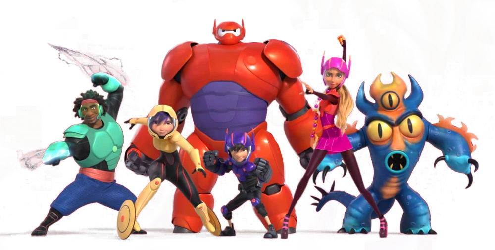

About Baymax
Baymax is a plus-sized inflatable health care robot. He was discovered by Hiro Hamada and created by his older brother. Together, they team up with friends to form a band of high-tech heroes!
Baymax and his friends
Baymax's Characteristics
- He's big and squishy like a teddy bear
- He has an arsenal of weapons and armour to defend from enemies
- He will look after you
Baymax's Friends
Baymax has some awesome friends that together create the superhero team called Big Hero 6. His best friend is Hiro Hamada who he is sworn to protect, as programmed by his older brother. Click on the links below to read more about them: